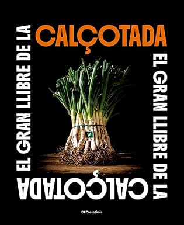
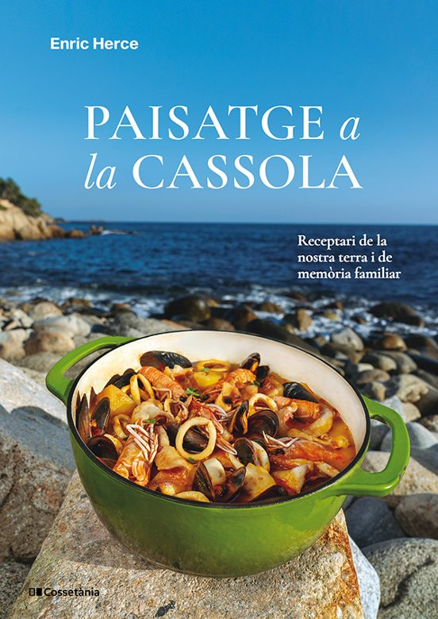
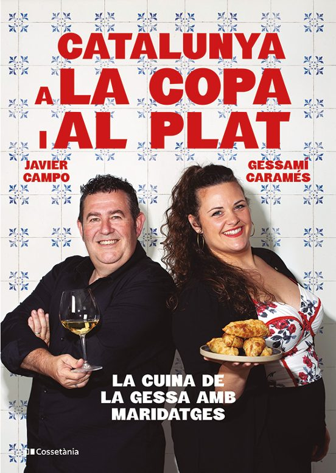
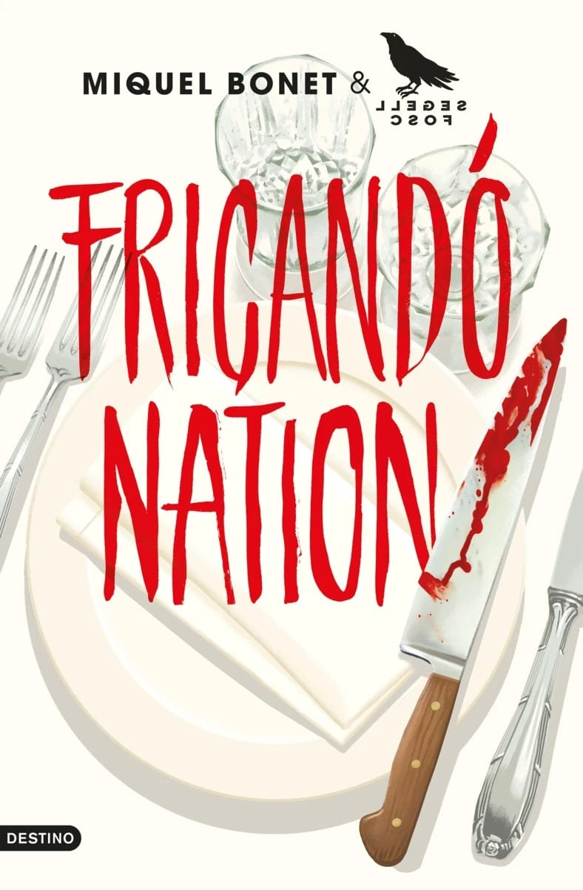
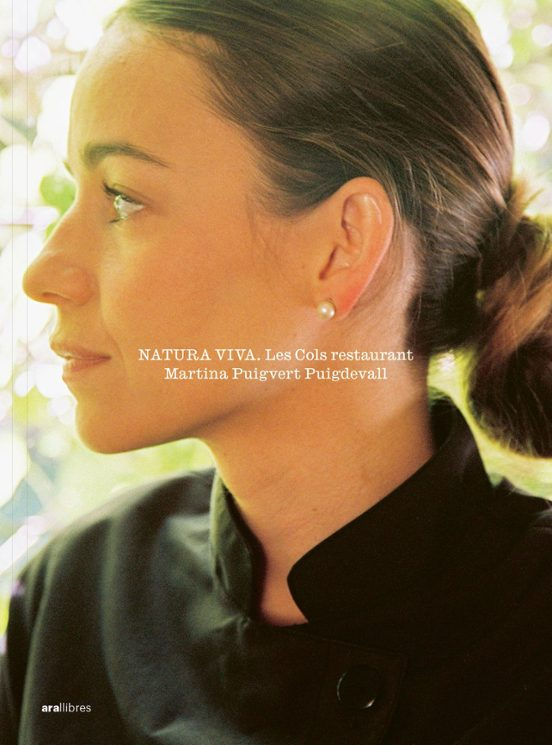
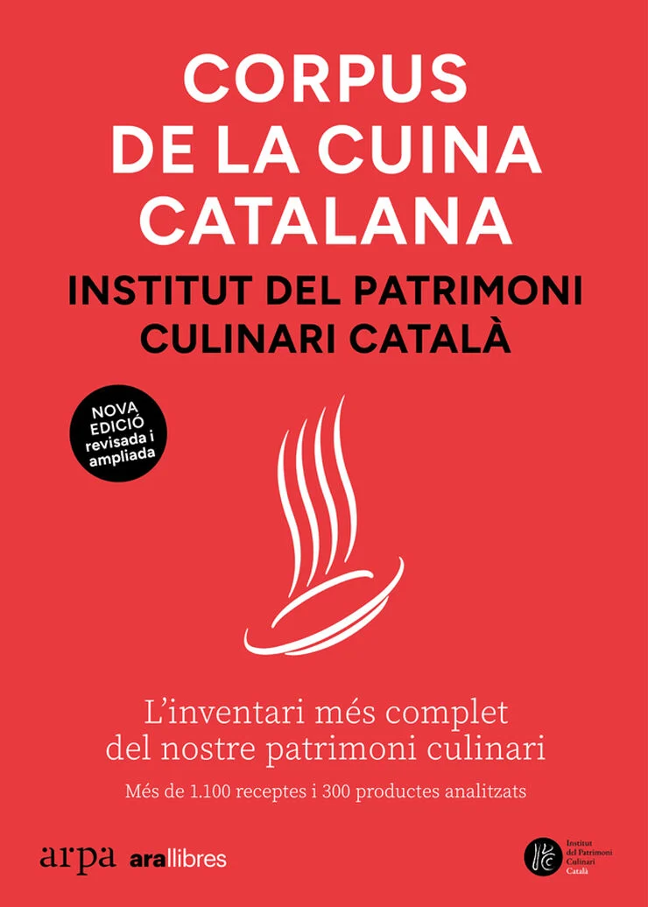
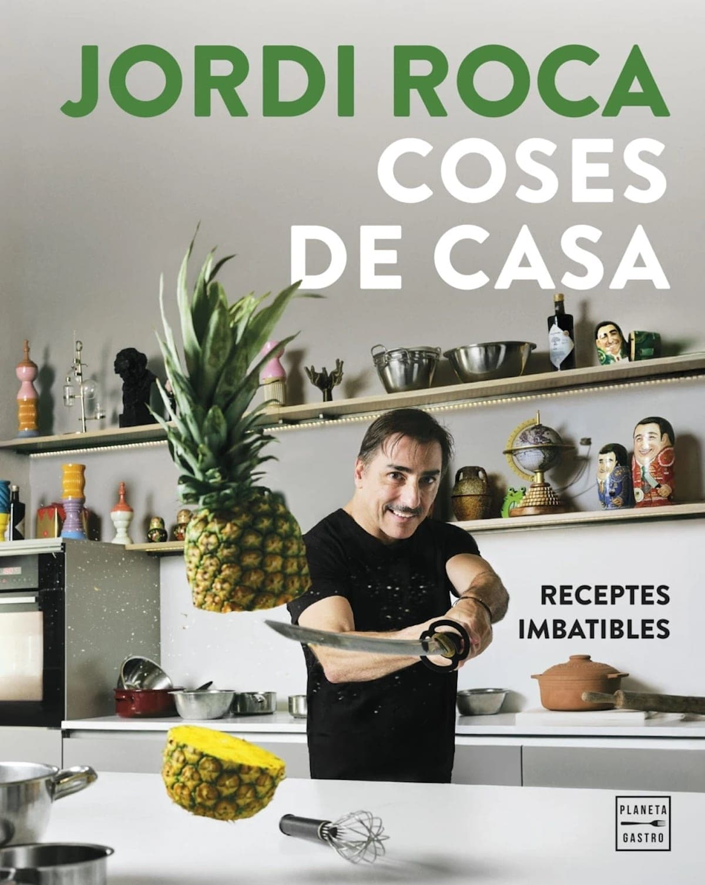
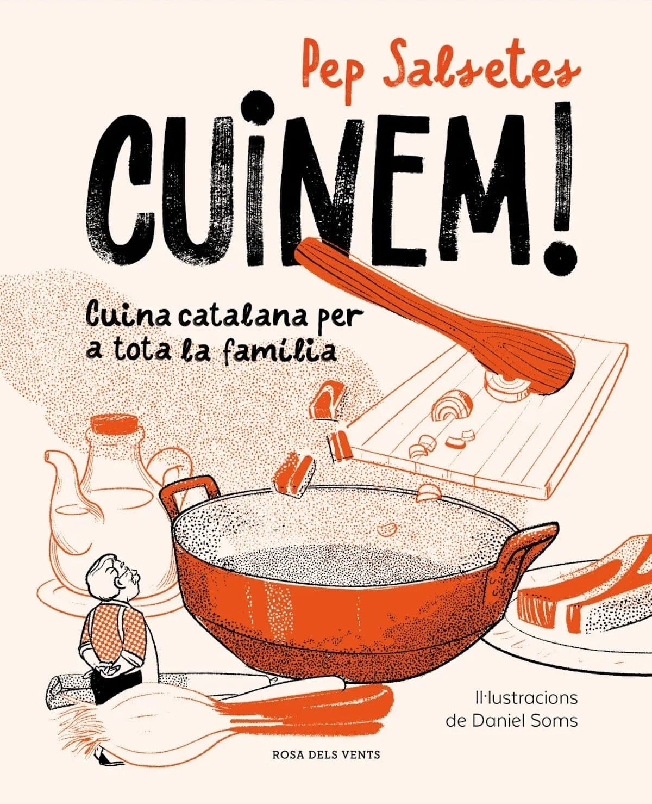

No todo son cenas, visitas y puntuaciones
Los Gourmets de Tarragona somos, antes que nada, personas que amamos la cultura gastronómica en su sentido más amplio: el producto, el territorio, el oficio y también los libros que nos ayudan a entender mejor todo eso. Cada Sant Jordi nos tomamos un momento para compartir lecturas que nos han llamado la atención, no como reseñas sino como recomendaciones de mesa: libros que nos parecen dignos de acompañar una buena rosa.
Este año la lista tiene un dato que nos alegra especialmente: tres de los ocho títulos son de Cossetània Edicions, la editorial de Valls, y uno es obra de un escritor de Reus. En ninguna otra lista de Sant Jordi 2026 que hayamos visto se da este peso territorial. Nos parece justo señalarlo.

El Gran Llibre de la Calçotada
Coord. Guillermo Soler García de Oteyza · Dir. Albert París Fortuny · Con Jaume Fàbrega, Carme Ruscalleda, Ferran Adrià y Ada Parellada
Comenzamos por casa. De Valls, del Alt Camp, de la tierra que inventó este rito invernal que cada año convoca a miles de personas alrededor del fuego. Cossetània Edicions publica el primer libro que aborda la calçotada en toda su dimensión: histórica, cultural, económica y gastronómica, con recetas de Ruscalleda, Adrià y Parellada. Una veintena de autores, 272 páginas en tapa dura y una pregunta que cualquier tarraconense se ha hecho alguna vez: ¿de dónde vienen exactamente los calçots? Aquí la respuesta cabe al completo.
🌱 Valls · Alt Camp · Tarragona
Paisatge a la cassola
Enric Herce
Josep Pla escribió que la cocina de un país es su paisaje puesto en la olla. Enric Herce coge esta frase y construye un viaje sentimental: 50 recetas que hablan no tanto de técnica como de memoria, de lugar y de arraigo. Segundo título de Cossetània Edicions en nuestra selección, y el que quizás tiene la portada más bella de todas: una cazuela verde sobre roca, con el mar al fondo.

Catalunya a la copa i al plat
Gessamí Caramés y Javier Campo
El tercer título de Cossetània Edicions en esta selección toca uno de los temas que más nos interesan como asociación: el maridaje entre platos catalanes y vinos del territorio. La Gessa —Gessamí Caramés— y Javier Campo proponen 50 recetas con su vino perfecto. Un libro práctico que trata el vino no como adorno sino como un ingrediente más de la mesa.
🍷 Maridaje · Vinos del territorio
Fricandó Nation
Miquel Bonet Pinyol (Reus, 1977)
El único título de ficción de la selección, y no por eso el menos gastronómico. Miquel Bonet Pinyol, nacido en Reus en 1977 —hijo de los chefs de El Trencadís de Salou— escribe una sátira feroz sobre ambición, fama y traición en el mundo de la alta cocina. Todo comienza con un fricandó perfecto servido en un hostal del Pirineo. Premio de ensayo Finestres 2022.
📍 Reus · Baix Camp · Tarragona
Natura Viva. Les Cols restaurant
Martina Puigvert Puigdevall (Olot, 1994) · Fotografías: Alba Yruela
Premio Mejor Chef Joven 2024, Martina Puigvert Puigdevall es la chef ejecutiva de Les Cols (2 estrellas Michelin, Olot) y aquí traduce la filosofía del restaurante a la cocina de casa: un menú para cada mes del año con producto de temporada. 368 páginas ilustradas por Alba Yruela.

Corpus de la Cuina Catalana (4.ª edición)
Fundació Institut del Patrimoni Culinari Català
Hay libros para leer y libros para tener. Este es de los dos. La cuarta edición revisada y ampliada del recetario más completo del patrimonio culinario catalán: cerca de 1.200 recetas, 28 nuevas, más de 100 mejoradas y unas 300 fichas de productos con valoración nutricional.

Coses de Casa. Receptes imbatibles
Jordi Roca · El Celler de Can Roca (3 estrellas Michelin)
El genio dulce del Celler de Can Roca baja del Olimpo y se sienta en la cocina de casa. Jordi Roca recoge aquí las recetas que ha ido compartiendo en redes sociales y que ahora quiere dejar documentadas en papel: sencillas, resolutivas, sin parafernalia.

Cuinem! Cuina catalana per a tota la família
Pep Salsetes · Ilustraciones: Daniel Soms
Acabamos con el más hermoso de todos en términos visuales. Pep Salsetes propone cocinar en familia, especialmente con los pequeños, como forma de transmitir la cocina catalana de una generación a la siguiente. Las ilustraciones de Daniel Soms hacen de este libro un objeto que va más allá de la receta.
Un libro y una rosa. El 23 de abril no hace falta elegir — los dos caben en las mismas manos.
Gracias a Cossetània Edicions, Ara Llibres, Arpa, Destino, Planeta Gastro y Rosa dels Vents por mantener vivo el ecosistema editorial gastronómico en catalán. Y gracias a las libreras y libreros de proximidad que cada Sant Jordi convierten las calles en el mejor escaparate del mundo.
Dami Molina es vocal cultural de Gourmets de Tarragona.